As a leading global producer of sustainable distributed energy, EDL is dedicated to a world of new energy for their customers, stakeholders, and communities. They are playing a key role in the world’s transition from traditional energy sources to sustainable decarbonized solutions.
EDL owns and operates a global portfolio of power assets in Australia, North America and Europe that generate more than 4,900 gigawatt hours (GWh) of energy – equivalent to powering 640,679 homes every year.
They are a world leader in the development and operation of ground-breaking high-penetration renewable hybrid technologies that use sustainable energy sources with proven conventional technologies. EDL’s actions have reduced methane emissions by 18.1 million tons of carbon dioxide equivalent (CO2e) annually. This equates to removing approximately 4.9 million cars from the road every year.
EDL pioneered the introduction and development of the landfill gas (LFG) energy sector in Australia and continues to lead the way in its advancement globally.
LFG is generated from decomposing organic matter in refuse tips. It mostly consists of methane, carbon dioxide, and organic compounds. This gas would otherwise be released to the atmosphere or flared. Instead, EDL converts the gas to electricity, significantly reducing greenhouse gas emissions.
The commercial use of LFG as a fuel requires gas to be extracted at a reasonably consistent flow and quality. EDL uses a pattern of vertical gas extraction wells linked by underground pipes to a gas collection facility. The entire system is maintained under a vacuum, inducing LFG to flow into the collection facility where gas processing reduces moisture and filters out fine particles.
The processed LFG is then used as a fuel in either gas engines or gas turbine generators. The power generation facilities are interconnected with a power grid.
| 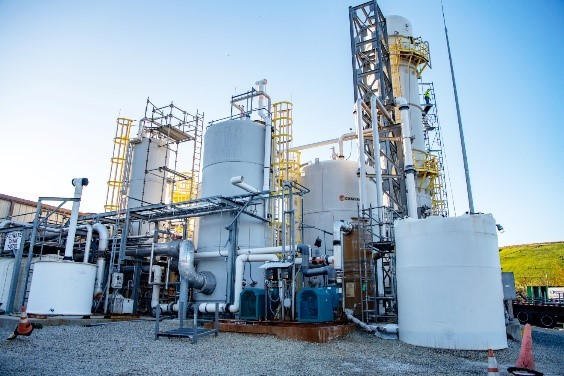
EDL's 33MW Johnston landfill gas plant (Rhode Island, United States) |
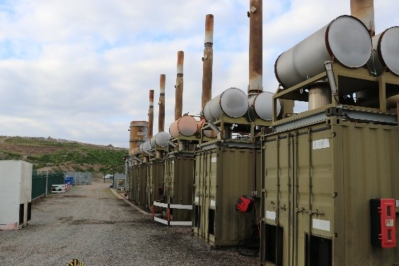
EDL's 16.6MW Rainham power station (Essex, United Kingdom) |
| 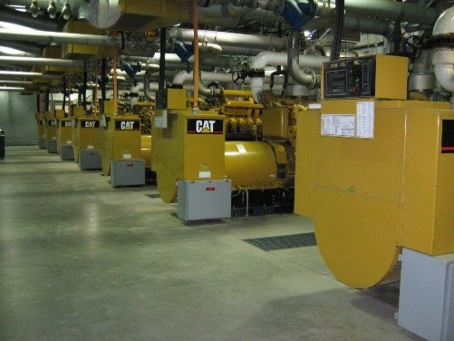
EDL's 11.2MW Lidya Energie power station (Lachute, Canada) |
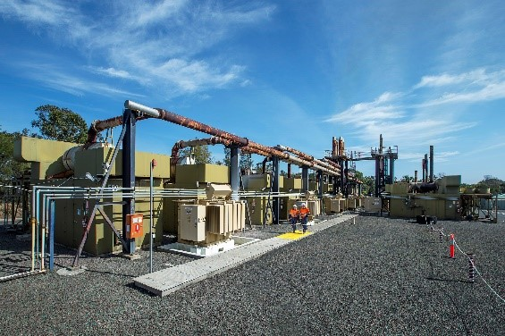 EDL's 19.3MW Lucas Heights power station (New South Wales, Australia) |
EDL owns and operates a large portfolio of waste coal mine gas (WCMG) powered stations in Australia.
WCMG is produced during the coal mining process as methane gas trapped in coal seams is released. As this product can be a safety hazard and a challenge to mining operations, it is extracted by mine ventilation and coal seam drainage. Historically a waste product that is vented or flared, the extracted methane is used by EDL as a power generation fuel—delivering reliable, sustainable and affordable energy and significantly reducing greenhouse gas emissions.
| 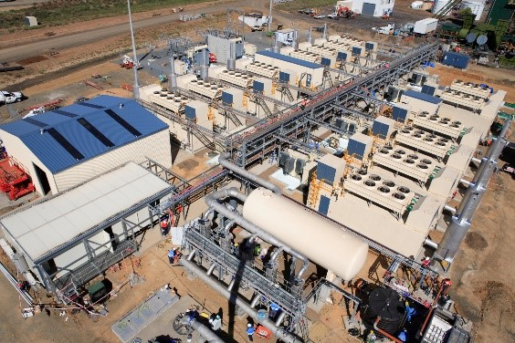
EDL's 45MW German Creek power station (Queensland, Australia) |
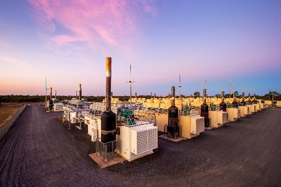
EDL's 63.9MW Moranbah North power station (Queensland, Australia) |
| 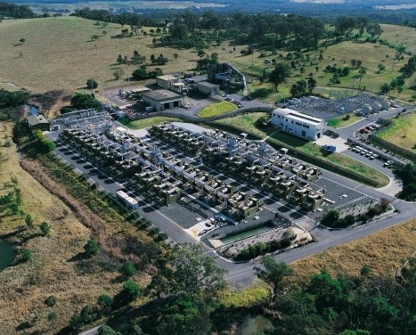
EDL's 40.2MW Appin power station (New South Wales, Australia) |
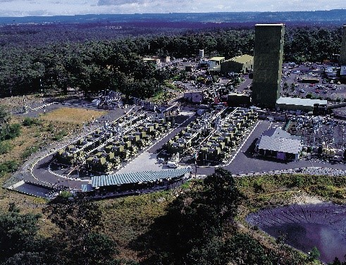 EDL's 41.2MW Tower Power Station (New South Wales, Australia) |
EDL is investing in work that goes beyond the conversion of gas to electricity by upgrading LFG and WCMG to green gas or renewable natural gas (RNG).
RNG is biogas formed by the decomposition of organic matter, such as methane, that has been processed to pipeline-quality standards. It’s fully interchangeable with conventional natural gas and can be used in natural gas-fuelled industries and vehicles as compressed natural gas (CNG) or liquified natural gas (LNG). When used as a vehicle fuel, RNG provides a substantial environmental benefit—85 percent reduction of CO2 emissions relative to diesel fuel.
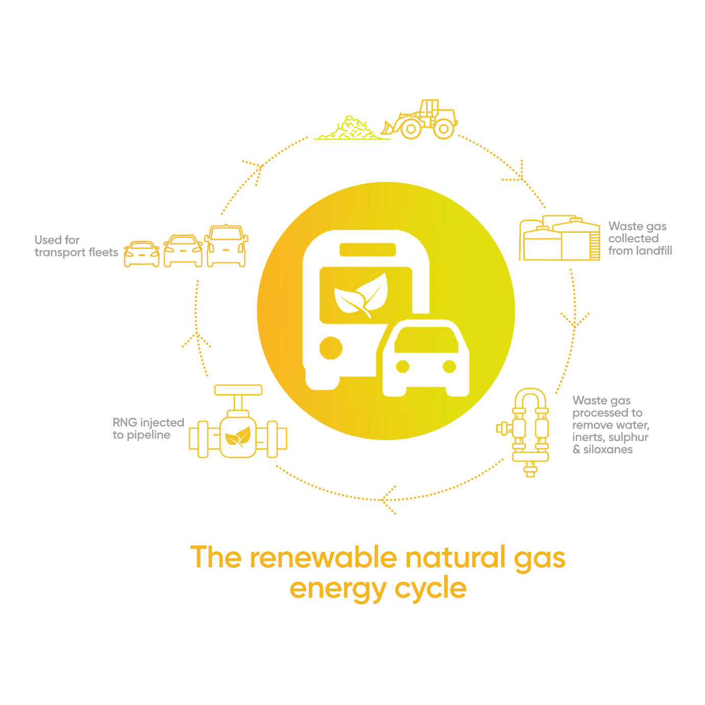
As the world transitions to renewables, EDL is growing their portfolio of world-class wind and solar projects across Australia with an increasing emphasis on high-penetration renewables and hybrid renewables for off-grid locations.
Hybrid projects are an innovative approach to energy delivery utilizing renewables such as wind or solar combined with battery storage and enabling technologies to minimize or replace traditional energy sources such as diesel or gas.
EDL’s Agnew Hybrid Renewable Project is the largest remote renewable micro-grid in the world. The project provides Gold Fields’s Agnew Gold Mine in Western Australia with more than 50 percent renewable energy and includes a 25 megawatt (MW) power station (18MW gas, 3MW diesel, 4MW photovoltaic solar power), five 3.6MW wind turbines, a 13MW/4 megawatt hours (MWh) battery energy storage system and an advanced micro-grid control system.
| 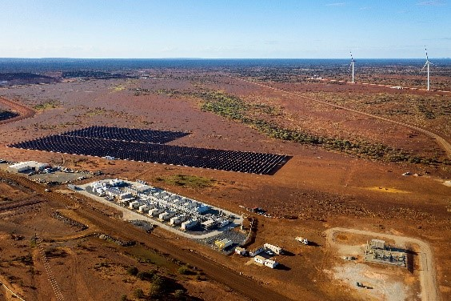
EDL's 56MW Agnew Hybrid Renewable Project (Western Australia, Australia) |
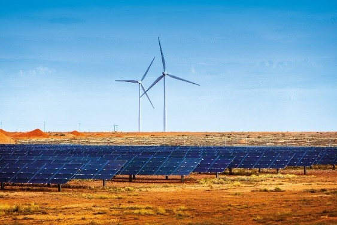
EDL's 9.3MW Coober Pedy Hybrid Renewable Project (South Australia, Australia) |
| 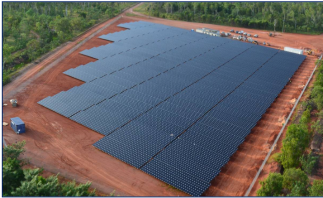
EDL's 1.7MW Weipa solar farm (Queensland, Australia) |
* Based on CY2019 performance